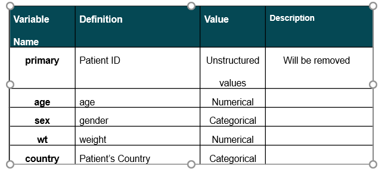

Clustering

To start the machine learning step, I will move deep into the machine cleaning part. First, I will remove NA values, Outliers, change variables type, translate them as categorical numbers for apply model or clustering. I will skip those step because I believe those are most simple steps and every data analyst can do that. I jump to the clustering analysis.
This is the table for doing clustering unsupervised learning. I have Age,sex,wt,and country . I expected that I will have more data to do this but It will violate to patients' privacies. Also due to the massive amount of data leading to my computer crashing several times during training so I have reduce the amount of data to 15000.
The DBSCAN algorithm should be used to find associations and structures in data that are hard to find manually but that can be relevant and useful to find patterns and predict trends. The main point of DBSCAN we find the parameters to define clusters. Epsilon means the radius of point in our graph over here. When 4 or more point inside the radius. It satisfies the requirement( mean the number of min_points in the graph we see that is 4). Those 4 point will merge to the first point and it keep expanding until no more point satisfy the criteria. So that is the theory for 1 cluster. DBSCAN will keep doing that until all the point are covered except the outliers.
Hierarchical clustering is the technique to find the most pairwise value have similar aspects. The more similar aspect the connect in the line is shorter. The connect line bigger and farther that mean their similarity is low. So we will pick the longest distance to choose the best number of clusters like this figure here.
In the Elbow method, we are actually varying the number of clusters ( K ) from 1 – 9. For each value of K, we are calculating WCSS ( Within-Cluster Sum of Square ). WCSS is the sum of squared distance between each point and the centroid in a cluster. When we plot the WCSS with the K value, the plot looks like an Elbow. As the number of clusters increases, the WCSS value will start to decrease. End when the line of cluster sum of squares rapidly change like in this graph at 3 clusters that is the numbers of cluster we have for this dataset.
This is the output after I segmented. And the centroids of those cluster